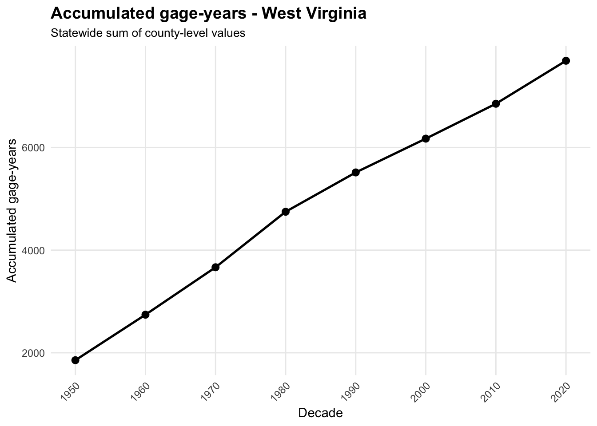
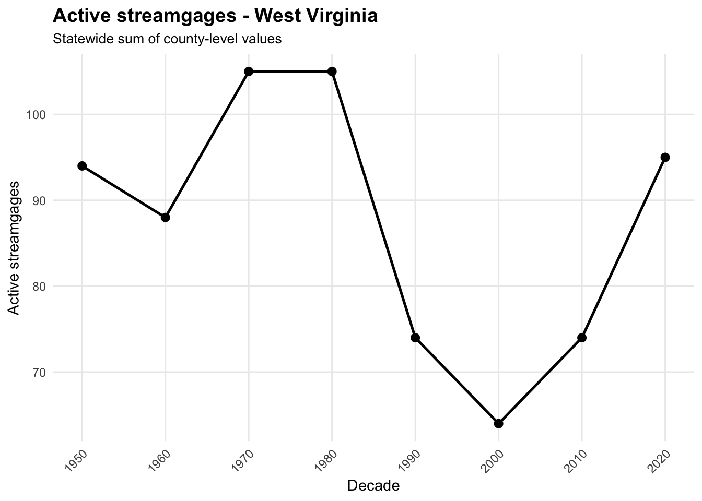
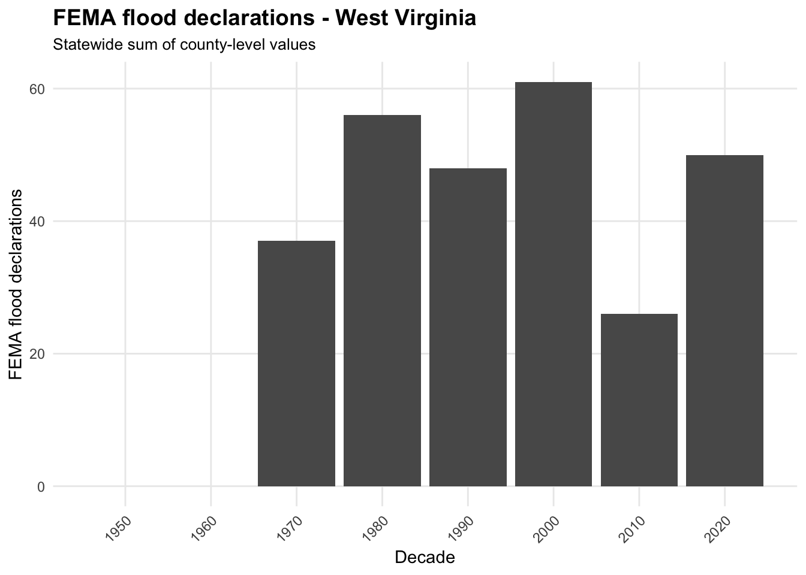
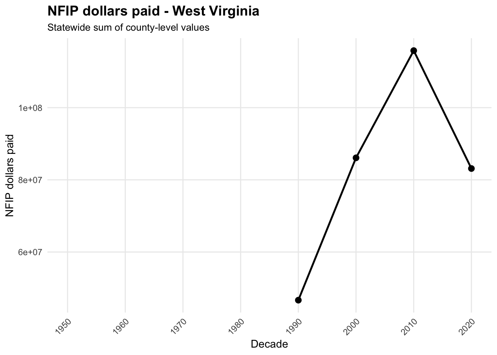
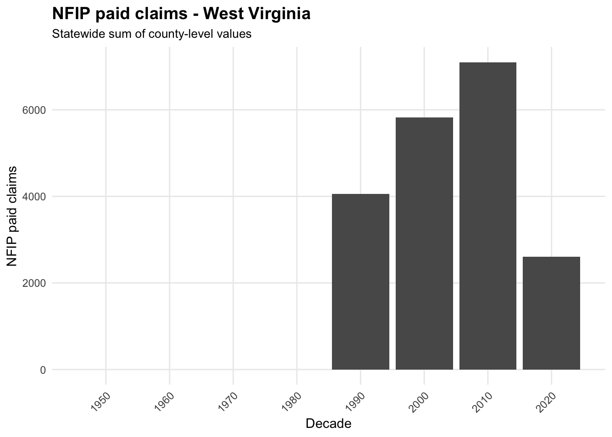
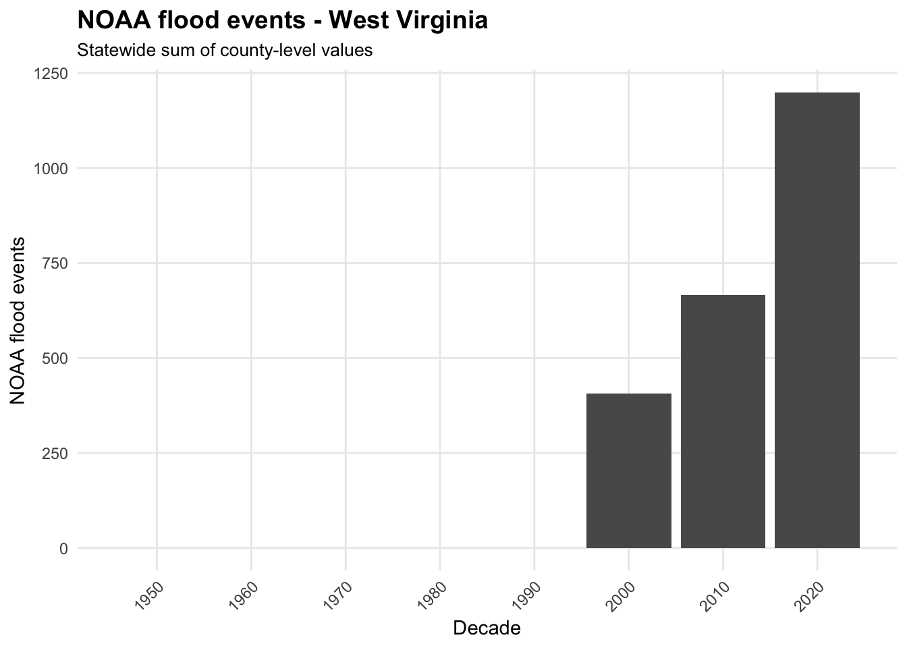
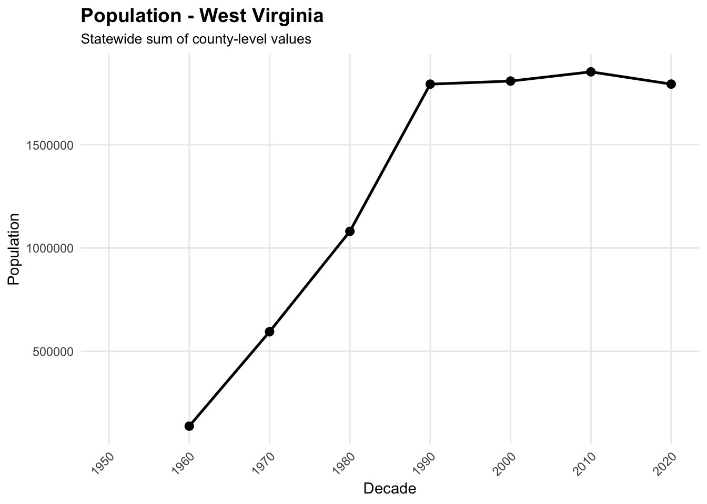

library(openxlsx)Combining data into tables for WV
This is processing a generated xlxs spreadsheet for all 10 states counties data collected and focusing just on wv to see how we might analyze what weve collected
PROJECT_DIR <- "/Users/sophiameyers/Documents/GitHub/USGS-Gages-Research"
# Generated workbook containing all 10 states
SOURCE_XLSX <- file.path(
PROJECT_DIR,
"data",
"intermediate",
"GENERATED_Historical_Floods_Population_Streamgages_10_States.xlsx"
)
OUTPUT_XLSX <- file.path(
PROJECT_DIR,
"West_Virginia_Historical_Floods.xlsx"
)all_sheets <- getSheetNames(SOURCE_XLSX)
state_codes <- unique(
substr(
all_sheets[grepl("^[A-Z]{2}_", all_sheets)],
1,
2
)
)
state_codes <- sort(state_codes)
cat("States identified:", length(state_codes), "\n")States identified: 10 print(state_codes) [1] "AL" "AR" "IA" "KY" "MO" "MS" "NE" "OK" "TN" "WV"wb <- createWorkbook()
for (state in state_codes) {
cat("Processing state:", state, "\n")
state_sheets <- all_sheets[
grepl(paste0("^", state, "_"), all_sheets)
]
addWorksheet(wb, state)
current_row <- 1
for (sheet_name in state_sheets) {
cat(" Processing:", sheet_name, "\n")
county_data <- read.xlsx(
SOURCE_XLSX,
sheet = sheet_name,
rows = 1:13,
cols = 1:9,
colNames = FALSE,
skipEmptyRows = FALSE,
skipEmptyCols = FALSE
)
county_data <- as.data.frame(county_data)
while (ncol(county_data) < 9) {
county_data[[ncol(county_data) + 1]] <- NA
}
writeData(
wb,
sheet = state,
x = county_data,
startRow = current_row,
startCol = 1,
colNames = FALSE,
rowNames = FALSE
)
current_row <- current_row + 15
}
cat(
" County sections:",
length(state_sheets),
"\n"
)
}Processing state: AL
Processing: AL_Lamar
Processing: AL_Clarke
Processing: AL_Tallapoosa
Processing: AL_Lawrence
Processing: AL_Franklin
Processing: AL_Marshall
Processing: AL_Hale
Processing: AL_Perry
Processing: AL_Colbert
Processing: AL_Randolph
Processing: AL_Montgomery
Processing: AL_Cullman
Processing: AL_Lowndes
Processing: AL_Russell
Processing: AL_Crenshaw
Processing: AL_Lauderdale
Processing: AL_Conecuh
Processing: AL_Chilton
Processing: AL_Coffee
Processing: AL_Elmore
Processing: AL_Butler
Processing: AL_Blount
Processing: AL_Barbour
Processing: AL_Escambia
Processing: AL_Jackson
Processing: AL_Greene
Processing: AL_Calhoun
Processing: AL_Jefferson
Processing: AL_Walker
Processing: AL_Washington
Processing: AL_Madison
Processing: AL_DeKalb
Processing: AL_Coosa
Processing: AL_Bibb
Processing: AL_Macon
Processing: AL_Bullock
Processing: AL_Autauga
Processing: AL_Henry
Processing: AL_Covington
Processing: AL_Monroe
Processing: AL_Dale
Processing: AL_Pickens
Processing: AL_Baldwin
Processing: AL_Shelby
Processing: AL_Houston
Processing: AL_St. Clair
Processing: AL_Geneva
Processing: AL_Clay
Processing: AL_Talladega
Processing: AL_Choctaw
Processing: AL_Cherokee
Processing: AL_Cleburne
Processing: AL_Sumter
Processing: AL_Winston
Processing: AL_Lee
Processing: AL_Pike
Processing: AL_Morgan
Processing: AL_Marion
Processing: AL_Limestone
Processing: AL_Etowah
Processing: AL_Marengo
Processing: AL_Mobile
Processing: AL_Fayette
Processing: AL_Chambers
Processing: AL_Dallas
Processing: AL_Tuscaloosa
Processing: AL_Wilcox
County sections: 67
Processing state: AR
Processing: AR_Madison
Processing: AR_Poinsett
Processing: AR_Boone
Processing: AR_Mississippi
Processing: AR_Grant
Processing: AR_Lafayette
Processing: AR_Cross
Processing: AR_Phillips
Processing: AR_Randolph
Processing: AR_Lawrence
Processing: AR_Clay
Processing: AR_Faulkner
Processing: AR_Howard
Processing: AR_Nevada
Processing: AR_Union
Processing: AR_Izard
Processing: AR_Greene
Processing: AR_White
Processing: AR_Crittenden
Processing: AR_Arkansas
Processing: AR_Ouachita
Processing: AR_Yell
Processing: AR_Sharp
Processing: AR_Independence
Processing: AR_Lonoke
Processing: AR_Lee
Processing: AR_Craighead
Processing: AR_Washington
Processing: AR_Woodruff
Processing: AR_Garland
Processing: AR_Van Buren
Processing: AR_Johnson
Processing: AR_Little River
Processing: AR_Calhoun
Processing: AR_Prairie
Processing: AR_Bradley
Processing: AR_Scott
Processing: AR_Drew
Processing: AR_Pike
Processing: AR_Saline
Processing: AR_Newton
Processing: AR_Searcy
Processing: AR_Conway
Processing: AR_Stone
Processing: AR_Cleveland
Processing: AR_Clark
Processing: AR_Carroll
Processing: AR_Monroe
Processing: AR_St. Francis
Processing: AR_Montgomery
Processing: AR_Cleburne
Processing: AR_Hot Spring
Processing: AR_Columbia
Processing: AR_Polk
Processing: AR_Crawford
Processing: AR_Jackson
Processing: AR_Perry
Processing: AR_Chicot
Processing: AR_Pope
Processing: AR_Marion
Processing: AR_Benton
Processing: AR_Ashley
Processing: AR_Desha
Processing: AR_Baxter
Processing: AR_Dallas
Processing: AR_Sebastian
Processing: AR_Pulaski
Processing: AR_Fulton
Processing: AR_Logan
Processing: AR_Miller
Processing: AR_Franklin
Processing: AR_Sevier
Processing: AR_Jefferson
Processing: AR_Lincoln
Processing: AR_Hempstead
County sections: 75
Processing state: IA
Processing: IA_Jasper
Processing: IA_Plymouth
Processing: IA_Pottawattamie
Processing: IA_Wapello
Processing: IA_Buchanan
Processing: IA_Dubuque
Processing: IA_Poweshiek
Processing: IA_Boone
Processing: IA_Keokuk
Processing: IA_Emmet
Processing: IA_Linn
Processing: IA_Dickinson
Processing: IA_Wright
Processing: IA_Union
Processing: IA_Cherokee
Processing: IA_Hardin
Processing: IA_Lyon
Processing: IA_Adams
Processing: IA_Winneshiek
Processing: IA_Henry
Processing: IA_Bremer
Processing: IA_O'Brien
Processing: IA_Howard
Processing: IA_Shelby
Processing: IA_Benton
Processing: IA_Guthrie
Processing: IA_Washington
Processing: IA_Marion
Processing: IA_Sac
Processing: IA_Mahaska
Processing: IA_Lee
Processing: IA_Fremont
Processing: IA_Kossuth
Processing: IA_Harrison
Processing: IA_Webster
Processing: IA_Jefferson
Processing: IA_Madison
Processing: IA_Clarke
Processing: IA_Fayette
Processing: IA_Warren
Processing: IA_Pocahontas
Processing: IA_Taylor
Processing: IA_Page
Processing: IA_Clay
Processing: IA_Adair
Processing: IA_Lucas
Processing: IA_Sioux
Processing: IA_Woodbury
Processing: IA_Mitchell
Processing: IA_Ida
Processing: IA_Cass
Processing: IA_Osceola
Processing: IA_Winnebago
Processing: IA_Johnson
Processing: IA_Jackson
Processing: IA_Muscatine
Processing: IA_Grundy
Processing: IA_Calhoun
Processing: IA_Appanoose
Processing: IA_Cedar
Processing: IA_Carroll
Processing: IA_Marshall
Processing: IA_Delaware
Processing: IA_Davis
Processing: IA_Monona
Processing: IA_Humboldt
Processing: IA_Buena Vista
Processing: IA_Mills
Processing: IA_Dallas
Processing: IA_Cerro Gordo
Processing: IA_Greene
Processing: IA_Des Moines
Processing: IA_Scott
Processing: IA_Polk
Processing: IA_Clayton
Processing: IA_Floyd
Processing: IA_Audubon
Processing: IA_Iowa
Processing: IA_Butler
Processing: IA_Louisa
Processing: IA_Decatur
Processing: IA_Montgomery
Processing: IA_Wayne
Processing: IA_Tama
Processing: IA_Monroe
Processing: IA_Jones
Processing: IA_Hamilton
Processing: IA_Franklin
Processing: IA_Palo Alto
Processing: IA_Ringgold
Processing: IA_Clinton
Processing: IA_Story
Processing: IA_Worth
Processing: IA_Allamakee
Processing: IA_Crawford
Processing: IA_Black Hawk
Processing: IA_Chickasaw
Processing: IA_Hancock
Processing: IA_Van Buren
County sections: 99
Processing state: KY
Processing: KY_Ballard
Processing: KY_Henry
Processing: KY_Mercer
Processing: KY_Lewis
Processing: KY_Trigg
Processing: KY_Christian
Processing: KY_Grayson
Processing: KY_Simpson
Processing: KY_Carroll
Processing: KY_Butler
Processing: KY_Madison
Processing: KY_Bourbon
Processing: KY_Magoffin
Processing: KY_Marion
Processing: KY_Logan
Processing: KY_Barren
Processing: KY_Harlan
Processing: KY_Boone
Processing: KY_Washington
Processing: KY_Mason
Processing: KY_Jefferson
Processing: KY_Martin
Processing: KY_Owsley
Processing: KY_Edmonson
Processing: KY_Daviess
Processing: KY_Powell
Processing: KY_Jessamine
Processing: KY_Monroe
Processing: KY_Knox
Processing: KY_Calloway
Processing: KY_Jackson
Processing: KY_Lawrence
Processing: KY_Morgan
Processing: KY_Muhlenberg
Processing: KY_Bracken
Processing: KY_Breathitt
Processing: KY_Perry
Processing: KY_Grant
Processing: KY_Taylor
Processing: KY_Clay
Processing: KY_Leslie
Processing: KY_Lyon
Processing: KY_Nicholas
Processing: KY_Campbell
Processing: KY_Cumberland
Processing: KY_Allen
Processing: KY_Lee
Processing: KY_Robertson
Processing: KY_Laurel
Processing: KY_Clark
Processing: KY_Meade
Processing: KY_Nelson
Processing: KY_Owen
Processing: KY_Hart
Processing: KY_Lincoln
Processing: KY_Elliott
Processing: KY_Woodford
Processing: KY_Bath
Processing: KY_Montgomery
Processing: KY_Larue
Processing: KY_Boyle
Processing: KY_Estill
Processing: KY_Whitley
Processing: KY_Franklin
Processing: KY_Menifee
Processing: KY_Marshall
Processing: KY_Todd
Processing: KY_Floyd
Processing: KY_Fayette
Processing: KY_Hancock
Processing: KY_Greenup
Processing: KY_Casey
Processing: KY_Metcalfe
Processing: KY_Russell
Processing: KY_Rockcastle
Processing: KY_Trimble
Processing: KY_Graves
Processing: KY_Hopkins
Processing: KY_Bell
Processing: KY_Warren
Processing: KY_Hickman
Processing: KY_Clinton
Processing: KY_McLean
Processing: KY_Rowan
Processing: KY_Wayne
Processing: KY_Johnson
Processing: KY_Pike
Processing: KY_Pulaski
Processing: KY_Webster
Processing: KY_Livingston
Processing: KY_Shelby
Processing: KY_McCracken
Processing: KY_Union
Processing: KY_Ohio
Processing: KY_Carter
Processing: KY_Scott
Processing: KY_Breckinridge
Processing: KY_Carlisle
Processing: KY_Anderson
Processing: KY_Oldham
Processing: KY_Caldwell
Processing: KY_Crittenden
Processing: KY_Knott
Processing: KY_Fulton
Processing: KY_Hardin
Processing: KY_Green
Processing: KY_Wolfe
Processing: KY_Boyd
Processing: KY_Adair
Processing: KY_Gallatin
Processing: KY_Harrison
Processing: KY_Bullitt
Processing: KY_Henderson
Processing: KY_Kenton
Processing: KY_Fleming
Processing: KY_McCreary
Processing: KY_Pendleton
Processing: KY_Spencer
Processing: KY_Letcher
Processing: KY_Garrard
County sections: 120
Processing state: MO
Processing: MO_Christian
Processing: MO_Dallas
Processing: MO_Schuyler
Processing: MO_Randolph
Processing: MO_Knox
Processing: MO_Livingston
Processing: MO_Moniteau
Processing: MO_Callaway
Processing: MO_Ray
Processing: MO_Miller
Processing: MO_Laclede
Processing: MO_Ozark
Processing: MO_Butler
Processing: MO_Scotland
Processing: MO_Crawford
Processing: MO_Clark
Processing: MO_Worth
Processing: MO_Cooper
Processing: MO_Bates
Processing: MO_Pettis
Processing: MO_Macon
Processing: MO_Daviess
Processing: MO_Polk
Processing: MO_Howell
Processing: MO_St. Clair
Processing: MO_Mercer
Processing: MO_Maries
Processing: MO_Lawrence
Processing: MO_Cole
Processing: MO_Cedar
Processing: MO_Johnson
Processing: MO_Shelby
Processing: MO_Shannon
Processing: MO_Jasper
Processing: MO_Newton
Processing: MO_Gasconade
Processing: MO_Ripley
Processing: MO_Ralls
Processing: MO_Andrew
Processing: MO_Montgomery
Processing: MO_Pike
Processing: MO_Scott
Processing: MO_Stone
Processing: MO_Wright
Processing: MO_Audrain
Processing: MO_Holt
Processing: MO_Saline
Processing: MO_Franklin
Processing: MO_DeKalb
Processing: MO_Iron
Processing: MO_Taney
Processing: MO_Linn
Processing: MO_Howard
Processing: MO_Boone
Processing: MO_Hickory
Processing: MO_Barry
Processing: MO_Osage
Processing: MO_Chariton
Processing: MO_Pemiscot
Processing: MO_St. Louis
Processing: MO_Jefferson
Processing: MO_Lincoln
Processing: MO_Phelps
Processing: MO_Morgan
Processing: MO_Greene
Processing: MO_St. Charles
Processing: MO_Benton
Processing: MO_Dent
Processing: MO_Gentry
Processing: MO_Harrison
Processing: MO_Cass
Processing: MO_Douglas
Processing: MO_Sullivan
Processing: MO_Nodaway
Processing: MO_Bollinger
Processing: MO_Madison
Processing: MO_Warren
Processing: MO_Henry
Processing: MO_Wayne
Processing: MO_Carter
Processing: MO_Cape Girardeau
Processing: MO_Mississippi
Processing: MO_Reynolds
Processing: MO_Clay
Processing: MO_Grundy
Processing: MO_Webster
Processing: MO_McDonald
Processing: MO_Atchison
Processing: MO_Stoddard
Processing: MO_Oregon
Processing: MO_Washington
Processing: MO_Perry
Processing: MO_Lafayette
Processing: MO_Ste. Genevieve
Processing: MO_Marion
Processing: MO_St. Francois
Processing: MO_Clinton
Processing: MO_Putnam
Processing: MO_Platte
Processing: MO_Buchanan
Processing: MO_Dade
Processing: MO_Pulaski
Processing: MO_Barton
Processing: MO_Vernon
Processing: MO_Caldwell
Processing: MO_Lewis
Processing: MO_Dunklin
Processing: MO_Monroe
Processing: MO_Jackson
Processing: MO_Texas
Processing: MO_Adair
Processing: MO_St. Louis_1
Processing: MO_Carroll
Processing: MO_New Madrid
Processing: MO_Camden
County sections: 115
Processing state: MS
Processing: MS_Winston
Processing: MS_Humphreys
Processing: MS_Wayne
Processing: MS_Lamar
Processing: MS_Marshall
Processing: MS_Calhoun
Processing: MS_Greene
Processing: MS_Grenada
Processing: MS_Wilkinson
Processing: MS_Leake
Processing: MS_Clay
Processing: MS_Franklin
Processing: MS_Hancock
Processing: MS_Holmes
Processing: MS_Oktibbeha
Processing: MS_Tallahatchie
Processing: MS_Sharkey
Processing: MS_Tate
Processing: MS_Leflore
Processing: MS_Jefferson Davis
Processing: MS_Neshoba
Processing: MS_Lee
Processing: MS_Hinds
Processing: MS_Pontotoc
Processing: MS_Washington
Processing: MS_Issaquena
Processing: MS_Yalobusha
Processing: MS_Clarke
Processing: MS_Claiborne
Processing: MS_Warren
Processing: MS_Tippah
Processing: MS_Jackson
Processing: MS_Panola
Processing: MS_DeSoto
Processing: MS_Noxubee
Processing: MS_Jefferson
Processing: MS_Lauderdale
Processing: MS_Lincoln
Processing: MS_Pike
Processing: MS_Prentiss
Processing: MS_Tishomingo
Processing: MS_Tunica
Processing: MS_Copiah
Processing: MS_Covington
Processing: MS_Smith
Processing: MS_Simpson
Processing: MS_Stone
Processing: MS_Scott
Processing: MS_Rankin
Processing: MS_Marion
Processing: MS_George
Processing: MS_Jasper
Processing: MS_Jones
Processing: MS_Union
Processing: MS_Adams
Processing: MS_Itawamba
Processing: MS_Pearl River
Processing: MS_Perry
Processing: MS_Kemper
Processing: MS_Benton
Processing: MS_Coahoma
Processing: MS_Harrison
Processing: MS_Choctaw
Processing: MS_Amite
Processing: MS_Forrest
Processing: MS_Alcorn
Processing: MS_Lafayette
Processing: MS_Yazoo
Processing: MS_Madison
Processing: MS_Sunflower
Processing: MS_Lawrence
Processing: MS_Newton
Processing: MS_Chickasaw
Processing: MS_Quitman
Processing: MS_Attala
Processing: MS_Lowndes
Processing: MS_Walthall
Processing: MS_Carroll
Processing: MS_Montgomery
Processing: MS_Bolivar
Processing: MS_Webster
Processing: MS_Monroe
County sections: 82
Processing state: NE
Processing: NE_Wheeler
Processing: NE_Fillmore
Processing: NE_Hooker
Processing: NE_Cass
Processing: NE_Dixon
Processing: NE_Webster
Processing: NE_Dakota
Processing: NE_Johnson
Processing: NE_Howard
Processing: NE_Pierce
Processing: NE_Platte
Processing: NE_Washington
Processing: NE_Sherman
Processing: NE_Knox
Processing: NE_Cheyenne
Processing: NE_Garden
Processing: NE_Harlan
Processing: NE_Deuel
Processing: NE_Dawes
Processing: NE_Douglas
Processing: NE_Holt
Processing: NE_Dundy
Processing: NE_Antelope
Processing: NE_Keya Paha
Processing: NE_Banner
Processing: NE_McPherson
Processing: NE_Red Willow
Processing: NE_Otoe
Processing: NE_Frontier
Processing: NE_Franklin
Processing: NE_Nance
Processing: NE_Rock
Processing: NE_Pawnee
Processing: NE_Butler
Processing: NE_Perkins
Processing: NE_Box Butte
Processing: NE_Thurston
Processing: NE_Hayes
Processing: NE_Morrill
Processing: NE_Blaine
Processing: NE_Sioux
Processing: NE_Dodge
Processing: NE_Chase
Processing: NE_Furnas
Processing: NE_Gage
Processing: NE_Brown
Processing: NE_Cuming
Processing: NE_Lancaster
Processing: NE_Nuckolls
Processing: NE_Hall
Processing: NE_Hamilton
Processing: NE_Loup
Processing: NE_Boyd
Processing: NE_Custer
Processing: NE_Dawson
Processing: NE_Arthur
Processing: NE_Clay
Processing: NE_Kimball
Processing: NE_Madison
Processing: NE_York
Processing: NE_Garfield
Processing: NE_Scotts Bluff
Processing: NE_Saunders
Processing: NE_Stanton
Processing: NE_Wayne
Processing: NE_Nemaha
Processing: NE_Boone
Processing: NE_Sarpy
Processing: NE_Burt
Processing: NE_Buffalo
Processing: NE_Thomas
Processing: NE_Seward
Processing: NE_Logan
Processing: NE_Merrick
Processing: NE_Sheridan
Processing: NE_Polk
Processing: NE_Richardson
Processing: NE_Keith
Processing: NE_Phelps
Processing: NE_Thayer
Processing: NE_Grant
Processing: NE_Greeley
Processing: NE_Jefferson
Processing: NE_Saline
Processing: NE_Adams
Processing: NE_Colfax
Processing: NE_Lincoln
Processing: NE_Kearney
Processing: NE_Hitchcock
Processing: NE_Cedar
Processing: NE_Cherry
Processing: NE_Valley
Processing: NE_Gosper
County sections: 93
Processing state: OK
Processing: OK_Kiowa
Processing: OK_Choctaw
Processing: OK_Roger Mills
Processing: OK_Custer
Processing: OK_Comanche
Processing: OK_McCurtain
Processing: OK_Harper
Processing: OK_Nowata
Processing: OK_Delaware
Processing: OK_Dewey
Processing: OK_Washington
Processing: OK_Major
Processing: OK_Haskell
Processing: OK_Texas
Processing: OK_Woodward
Processing: OK_Oklahoma
Processing: OK_Johnston
Processing: OK_Latimer
Processing: OK_Grady
Processing: OK_Harmon
Processing: OK_Kay
Processing: OK_Craig
Processing: OK_Tulsa
Processing: OK_McIntosh
Processing: OK_Pottawatomie
Processing: OK_Lincoln
Processing: OK_Alfalfa
Processing: OK_Atoka
Processing: OK_Okmulgee
Processing: OK_Jefferson
Processing: OK_Mayes
Processing: OK_McClain
Processing: OK_Le Flore
Processing: OK_Canadian
Processing: OK_Seminole
Processing: OK_Rogers
Processing: OK_Caddo
Processing: OK_Love
Processing: OK_Woods
Processing: OK_Murray
Processing: OK_Blaine
Processing: OK_Payne
Processing: OK_Cimarron
Processing: OK_Ellis
Processing: OK_Okfuskee
Processing: OK_Creek
Processing: OK_Pontotoc
Processing: OK_Washita
Processing: OK_Pushmataha
Processing: OK_Cleveland
Processing: OK_Noble
Processing: OK_Marshall
Processing: OK_Tillman
Processing: OK_Stephens
Processing: OK_Bryan
Processing: OK_Cherokee
Processing: OK_Osage
Processing: OK_Pawnee
Processing: OK_Coal
Processing: OK_Garfield
Processing: OK_Beckham
Processing: OK_Ottawa
Processing: OK_Logan
Processing: OK_Pittsburg
Processing: OK_Greer
Processing: OK_Cotton
Processing: OK_Garvin
Processing: OK_Beaver
Processing: OK_Kingfisher
Processing: OK_Adair
Processing: OK_Sequoyah
Processing: OK_Wagoner
Processing: OK_Hughes
Processing: OK_Muskogee
Processing: OK_Jackson
Processing: OK_Carter
Processing: OK_Grant
County sections: 77
Processing state: TN
Processing: TN_Marshall
Processing: TN_Hamblen
Processing: TN_Cheatham
Processing: TN_Giles
Processing: TN_Union
Processing: TN_Dyer
Processing: TN_Gibson
Processing: TN_Rutherford
Processing: TN_Knox
Processing: TN_Fayette
Processing: TN_Dickson
Processing: TN_Fentress
Processing: TN_Carter
Processing: TN_Washington
Processing: TN_Montgomery
Processing: TN_Grainger
Processing: TN_Lewis
Processing: TN_Sevier
Processing: TN_Polk
Processing: TN_Bedford
Processing: TN_Clay
Processing: TN_Lauderdale
Processing: TN_Roane
Processing: TN_Greene
Processing: TN_Hardeman
Processing: TN_Cumberland
Processing: TN_Blount
Processing: TN_Van Buren
Processing: TN_Obion
Processing: TN_Robertson
Processing: TN_Loudon
Processing: TN_Smith
Processing: TN_Trousdale
Processing: TN_Anderson
Processing: TN_Rhea
Processing: TN_Overton
Processing: TN_Haywood
Processing: TN_Monroe
Processing: TN_Stewart
Processing: TN_Madison
Processing: TN_Sequatchie
Processing: TN_Wilson
Processing: TN_Sullivan
Processing: TN_Jefferson
Processing: TN_Warren
Processing: TN_Lake
Processing: TN_Meigs
Processing: TN_Benton
Processing: TN_Pickett
Processing: TN_Lawrence
Processing: TN_Coffee
Processing: TN_Humphreys
Processing: TN_Unicoi
Processing: TN_DeKalb
Processing: TN_Franklin
Processing: TN_Cannon
Processing: TN_Bledsoe
Processing: TN_Weakley
Processing: TN_Wayne
Processing: TN_Hickman
Processing: TN_Putnam
Processing: TN_Jackson
Processing: TN_McMinn
Processing: TN_Carroll
Processing: TN_Campbell
Processing: TN_Shelby
Processing: TN_Johnson
Processing: TN_Marion
Processing: TN_White
Processing: TN_Sumner
Processing: TN_Grundy
Processing: TN_Bradley
Processing: TN_Lincoln
Processing: TN_Davidson
Processing: TN_Macon
Processing: TN_Cocke
Processing: TN_Hancock
Processing: TN_Hardin
Processing: TN_Claiborne
Processing: TN_Houston
Processing: TN_Hawkins
Processing: TN_Williamson
Processing: TN_Morgan
Processing: TN_Moore
Processing: TN_Tipton
Processing: TN_Henderson
Processing: TN_McNairy
Processing: TN_Scott
Processing: TN_Decatur
Processing: TN_Hamilton
Processing: TN_Chester
Processing: TN_Crockett
Processing: TN_Perry
Processing: TN_Henry
Processing: TN_Maury
County sections: 95
Processing state: WV
Processing: WV_Berkeley
Processing: WV_Mineral
Processing: WV_Lewis
Processing: WV_Raleigh
Processing: WV_Preston
Processing: WV_Ohio
Processing: WV_Morgan
Processing: WV_Jefferson
Processing: WV_Mercer
Processing: WV_Hancock
Processing: WV_Kanawha
Processing: WV_Tucker
Processing: WV_Roane
Processing: WV_Grant
Processing: WV_Webster
Processing: WV_Logan
Processing: WV_Pleasants
Processing: WV_Fayette
Processing: WV_Marshall
Processing: WV_Jackson
Processing: WV_Monongalia
Processing: WV_Wood
Processing: WV_Greenbrier
Processing: WV_Ritchie
Processing: WV_Hardy
Processing: WV_Pendleton
Processing: WV_Summers
Processing: WV_Mason
Processing: WV_Gilmer
Processing: WV_Cabell
Processing: WV_Braxton
Processing: WV_Brooke
Processing: WV_Calhoun
Processing: WV_Lincoln
Processing: WV_Wyoming
Processing: WV_Barbour
Processing: WV_Clay
Processing: WV_McDowell
Processing: WV_Harrison
Processing: WV_Wetzel
Processing: WV_Monroe
Processing: WV_Putnam
Processing: WV_Boone
Processing: WV_Randolph
Processing: WV_Marion
Processing: WV_Hampshire
Processing: WV_Doddridge
Processing: WV_Wirt
Processing: WV_Tyler
Processing: WV_Wayne
Processing: WV_Pocahontas
Processing: WV_Taylor
Processing: WV_Mingo
Processing: WV_Upshur
Processing: WV_Nicholas
County sections: 55 saveWorkbook(
wb,
OUTPUT_XLSX,
overwrite = TRUE
)
cat("10-state workbook created!\n")10-state workbook created!cat("Number of state tabs:", length(state_codes), "\n")Number of state tabs: 10 cat("States:", paste(state_codes, collapse = ", "), "\n")States: AL, AR, IA, KY, MO, MS, NE, OK, TN, WV cat("Output file:", OUTPUT_XLSX, "\n")Output file: /Users/sophiameyers/Documents/GitHub/USGS-Gages-Research/West_Virginia_Historical_Floods.xlsx Now have a file called Processed/Test_States_Data_Combined.xlsx with every states data collected so far in a workbook* called
Now creating some graphs in west virginia to see trends over time for each of the rows
library(openxlsx)
library(dplyr)
Attaching package: 'dplyr'The following objects are masked from 'package:stats':
filter, lagThe following objects are masked from 'package:base':
intersect, setdiff, setequal, unionlibrary(ggplot2)
library(stringr)
PROJECT_DIR <- "/Users/sophiameyers/Documents/GitHub/USGS-Gages-Research"
SOURCE_XLSX <- file.path(
PROJECT_DIR,
"data",
"processed",
"Test_States_Data_Combined.xlsx"
)
PLOT_DIR <- file.path(
PROJECT_DIR,
"outputs",
"WV_trend_plots"
)
dir.create(
PLOT_DIR,
recursive = TRUE,
showWarnings = FALSE
)
if (!file.exists(SOURCE_XLSX)) {
stop("Source workbook not found: ", SOURCE_XLSX)
}
cat("Reading West Virginia data...\n")Reading West Virginia data...sheets <- getSheetNames(SOURCE_XLSX)
print(sheets) [1] "AL" "AR" "IA" "KY" "MO" "MS" "NE" "OK" "TN" "WV"if (!"WV" %in% sheets) {
stop("A worksheet named WV was not found.")
}
wv <- read.xlsx(
SOURCE_XLSX,
sheet = "WV",
colNames = FALSE,
skipEmptyRows = FALSE,
skipEmptyCols = FALSE
)
metric_rows <- which(
trimws(as.character(wv[[1]])) == "Metric"
)
cat(
"County tables identified:",
length(metric_rows),
"\n"
)County tables identified: 55 if (length(metric_rows) == 0) {
stop("No county Metric headers found.")
}
years <- as.numeric(
as.character(
unlist(wv[metric_rows[1], 2:9])
)
)
cat("Decades identified:\n")Decades identified:print(years)[1] 1950 1960 1970 1980 1990 2000 2010 2020county_tables <- list()
for (i in seq_along(metric_rows)) {
header_row <- metric_rows[i]
# County name is three rows above Metric header
county_name <- as.character(
wv[[1]][header_row - 3]
)
# Determine end of county section
next_header <- if (i < length(metric_rows)) {
metric_rows[i + 1]
} else {
nrow(wv) + 1
}
# Metric rows are immediately below header
metric_start <- header_row + 1
metric_end <- next_header - 1
# Find first blank row after metric header
first_blank <- which(
is.na(wv[[1]][metric_start:metric_end]) |
trimws(as.character(
wv[[1]][metric_start:metric_end]
)) == ""
)
if (length(first_blank) > 0) {
metric_end <- metric_start + first_blank[1] - 2
}
if (metric_end < metric_start) next
metric_data <- wv[
metric_start:metric_end,
1:9,
drop = FALSE
]
for (j in seq_len(nrow(metric_data))) {
metric_name <- as.character(
metric_data[[1]][j]
)
if (is.na(metric_name) || trimws(metric_name) == "") {
next
}
values <- suppressWarnings(
as.numeric(
as.character(
unlist(metric_data[j, 2:9])
)
)
)
county_tables[[length(county_tables) + 1]] <- data.frame(
County = county_name,
Metric = metric_name,
Year = years,
Value = values
)
}
}
wv_long <- bind_rows(county_tables)
cat("Extracted records:\n")Extracted records:print(dim(wv_long))[1] 3080 4cat("Metrics identified:\n")Metrics identified:print(unique(wv_long$Metric))[1] "Population" "Active streamgages"
[3] "Accumulated gage-years" "FEMA flood declarations"
[5] "NFIP paid claims" "NFIP dollars paid"
[7] "NOAA flood events" wv_statewide <- wv_long %>%
group_by(Metric, Year) %>%
summarise(
Value = if (all(is.na(Value))) {
NA_real_
} else {
sum(Value, na.rm = TRUE)
},
Counties_Reporting = sum(!is.na(Value)),
.groups = "drop"
)
cat("Statewide results:\n")Statewide results:print(
wv_statewide,
n = Inf
)# A tibble: 56 × 4
Metric Year Value Counties_Reporting
<chr> <dbl> <dbl> <int>
1 Accumulated gage-years 1950 1855 1
2 Accumulated gage-years 1960 2742 1
3 Accumulated gage-years 1970 3666 1
4 Accumulated gage-years 1980 4748 1
5 Accumulated gage-years 1990 5514 1
6 Accumulated gage-years 2000 6173 1
7 Accumulated gage-years 2010 6853 1
8 Accumulated gage-years 2020 7691 1
9 Active streamgages 1950 94 1
10 Active streamgages 1960 88 1
11 Active streamgages 1970 105 1
12 Active streamgages 1980 105 1
13 Active streamgages 1990 74 1
14 Active streamgages 2000 64 1
15 Active streamgages 2010 74 1
16 Active streamgages 2020 95 1
17 FEMA flood declarations 1950 NA 0
18 FEMA flood declarations 1960 NA 0
19 FEMA flood declarations 1970 37 1
20 FEMA flood declarations 1980 56 1
21 FEMA flood declarations 1990 48 1
22 FEMA flood declarations 2000 61 1
23 FEMA flood declarations 2010 26 1
24 FEMA flood declarations 2020 50 1
25 NFIP dollars paid 1950 NA 0
26 NFIP dollars paid 1960 NA 0
27 NFIP dollars paid 1970 NA 0
28 NFIP dollars paid 1980 NA 0
29 NFIP dollars paid 1990 46663299. 1
30 NFIP dollars paid 2000 86098974. 1
31 NFIP dollars paid 2010 115797700. 1
32 NFIP dollars paid 2020 83132939. 1
33 NFIP paid claims 1950 NA 0
34 NFIP paid claims 1960 NA 0
35 NFIP paid claims 1970 NA 0
36 NFIP paid claims 1980 NA 0
37 NFIP paid claims 1990 4062 1
38 NFIP paid claims 2000 5827 1
39 NFIP paid claims 2010 7098 1
40 NFIP paid claims 2020 2605 1
41 NOAA flood events 1950 NA 0
42 NOAA flood events 1960 NA 0
43 NOAA flood events 1970 NA 0
44 NOAA flood events 1980 NA 0
45 NOAA flood events 1990 NA 0
46 NOAA flood events 2000 406 1
47 NOAA flood events 2010 665 1
48 NOAA flood events 2020 1199 1
49 Population 1950 NA 0
50 Population 1960 136992 1
51 Population 1970 594463 1
52 Population 1980 1080634 1
53 Population 1990 1793477 1
54 Population 2000 1808344 1
55 Population 2010 1852994 1
56 Population 2020 1793716 1write.csv(
wv_statewide,
file.path(PLOT_DIR, "WV_statewide_trends.csv"),
row.names = FALSE
)
plots <- list()
column_metrics <- c(
"FEMA flood declarations",
"NFIP paid claims",
"NOAA flood events"
)
for (metric in unique(wv_statewide$Metric)) {
plot_data <- wv_statewide %>%
filter(Metric == metric) %>%
arrange(Year)
if (metric %in% column_metrics) {
p <- ggplot(
plot_data,
aes(x = Year, y = Value)
) +
geom_col(
na.rm = TRUE
)
} else {
p <- ggplot(
plot_data,
aes(x = Year, y = Value)
) +
geom_line(
linewidth = 0.9,
na.rm = TRUE
) +
geom_point(
size = 2.5,
na.rm = TRUE
)
}
p <- p +
scale_x_continuous(
breaks = years
) +
labs(
title = paste(metric, "- West Virginia"),
subtitle = "Statewide sum of county-level values",
x = "Decade",
y = metric
) +
theme_minimal() +
theme(
plot.title = element_text(
face = "bold",
size = 14
),
plot.subtitle = element_text(
size = 10
),
axis.text.x = element_text(
angle = 45,
hjust = 1
),
panel.grid.minor = element_blank()
)
plots[[metric]] <- p
print(p)
safe_name <- str_replace_all(
tolower(metric),
"[^a-z0-9]+",
"_"
)
ggsave(
filename = file.path(
PLOT_DIR,
paste0("WV_", safe_name, ".png")
),
plot = p,
width = 9,
height = 5,
dpi = 300
)
}





